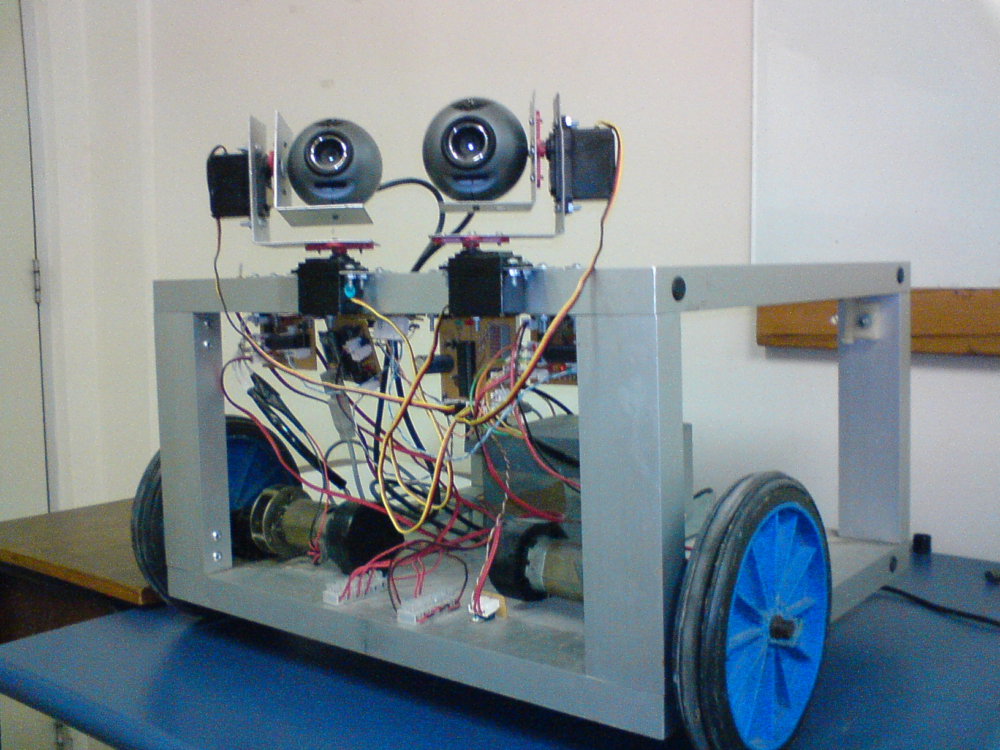
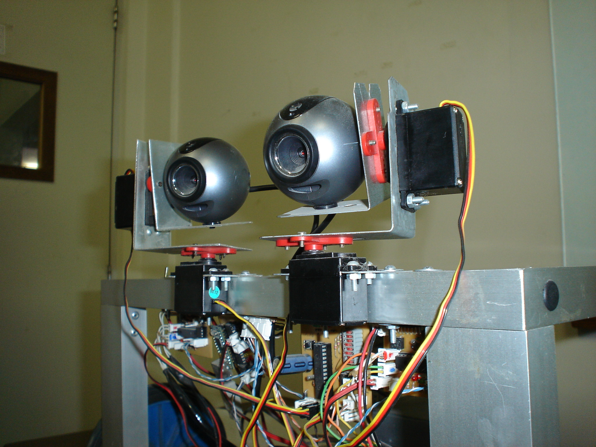
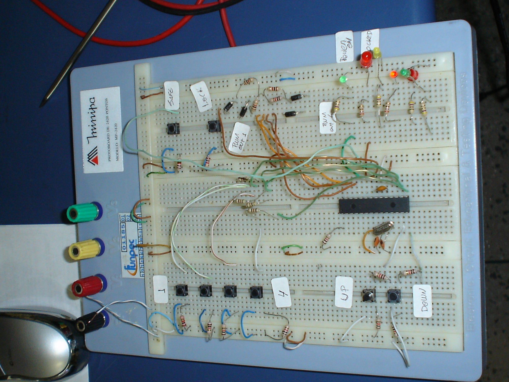
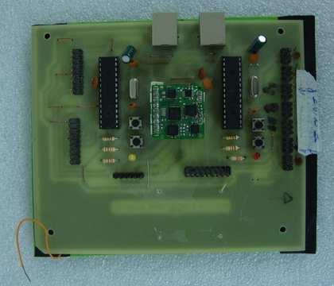
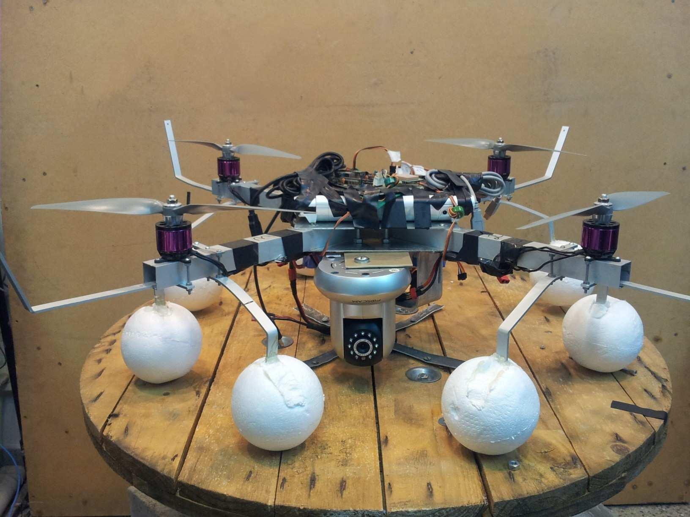
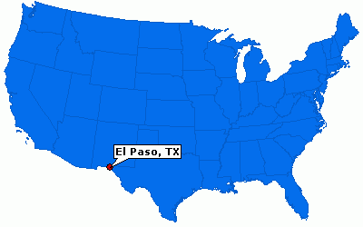

João Paulo F. Guimarães
Formação Acadêmica
Graduação
Engenharia de Computação
Universidade Federal do Rio Grande do Norte - UFRN
Automação Industrial
2005 - 2010
Projetos do LAR/UFRN
Prótese Robótica
Projetos do LAR/UFRN
Futebol de Robôs
Projetos do LAR/UFRN
Robôs com rodas
Eletrônica embarcada


(2010) TCC: Projeto de um Veículo Aéreo Não Tripulado para Supervisão de Instalações de Petróleo e Gás



Mestrado
Programa de Pós Graduação em Engenharia Elétrica e Computação - PPGEEC/UFRN
(2010-2012) Controle de Atitude e Altitude De Um Veículo Aéreo Não Tripulado Do Tipo Quadrirrotor


Doutorado
PPGEEC/UFRN
(2016-2019) Correntropia Complexa: Definição, Propriedades e Aplicações
(2017-2018) Pesquisador visitante - University of Texas at El Paso, EUA (Visiting Research Scholar)

Professor do IFRN desde 2012
Campus Apodi, Ipanguaçu
João Câmara (2015)
Manutenção de Equipamentos de Informática
Matt Might
Linhas de pesquisa
- Microeletrônica / Sistemas Embarcados
- Aprendizado de Máquina
- Processamento de Sinais
Dúvidas, críticas, sugestões?
Apresentanção feita usando reveal.js